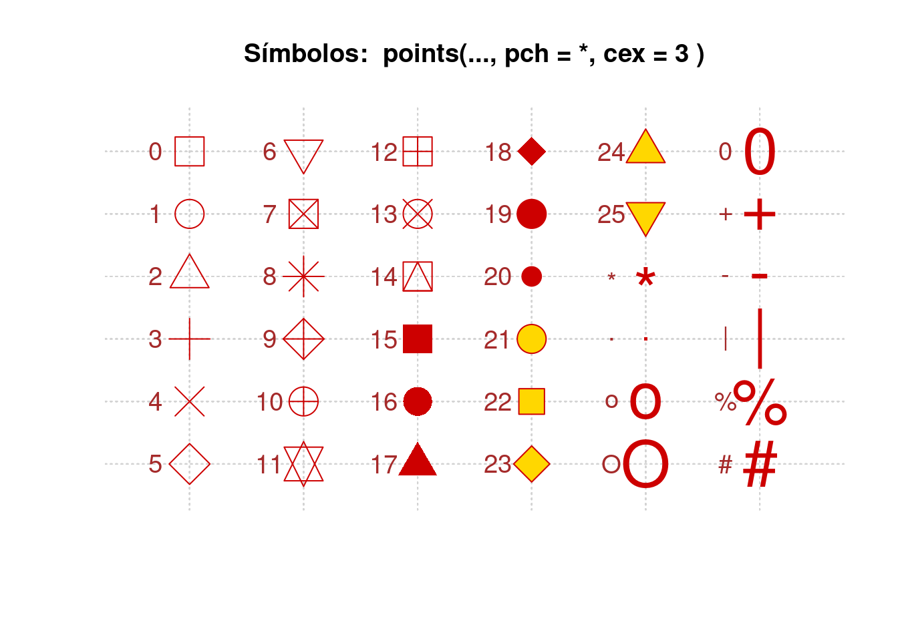
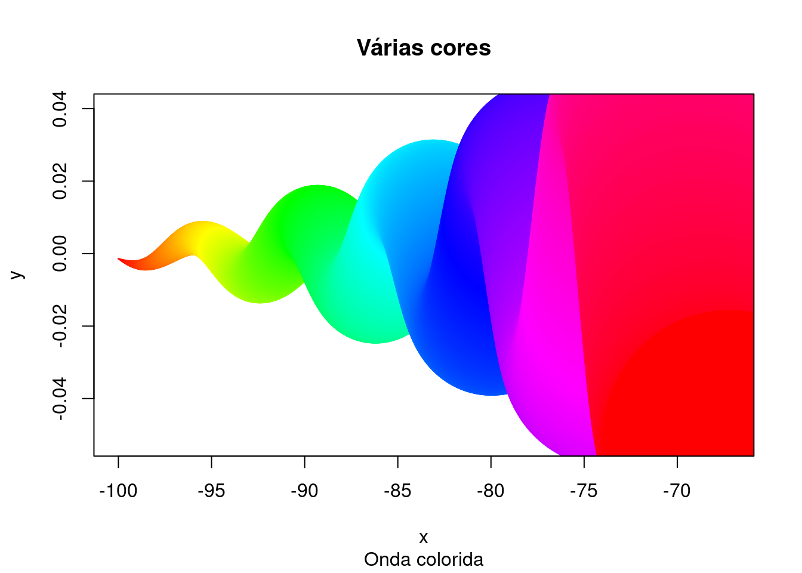
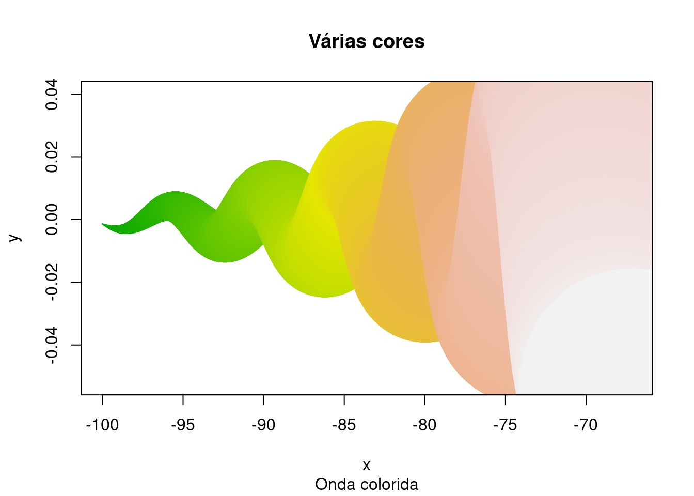
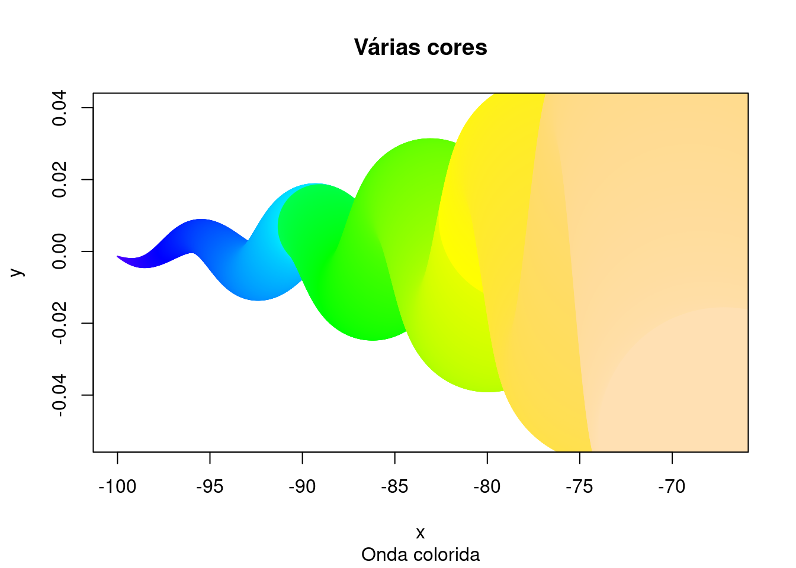
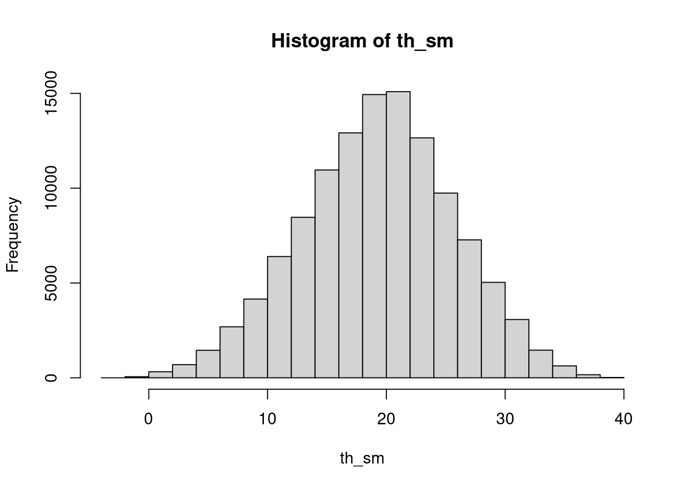
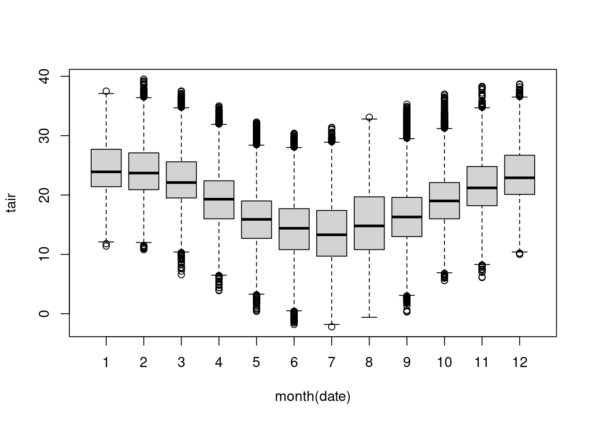
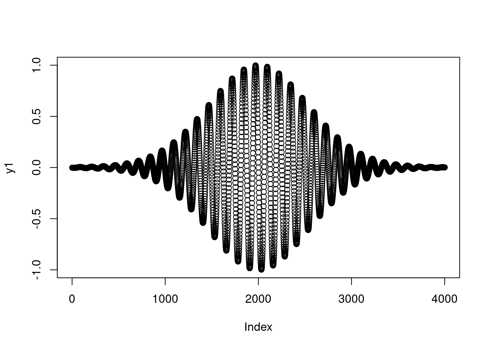
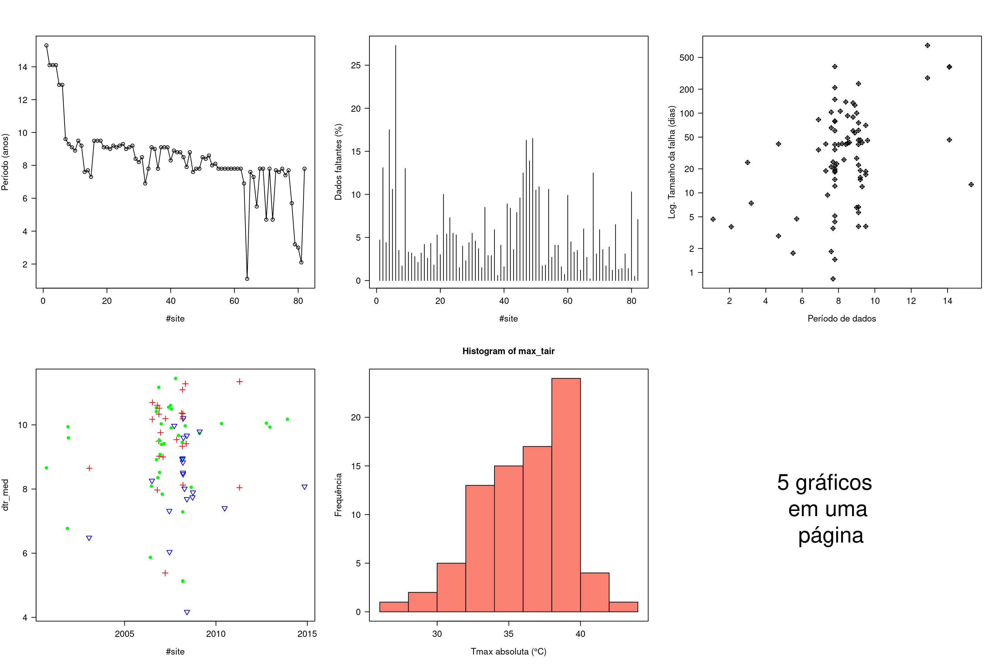

11.5 Parâmetros gráficos
Podemos personalizar muitas características de um gráfico (cores, eixos, títulos) através de opções chamadas parâmetros gráficos.
As opções são especificadas através da função par(). Os parâmetros assim definidos terão efeito até o fim da sessão ou até que eles sejam mudados.
Digitando par() sem parâmetros produz uma lista das configurações gráficas atuais. A diversidade de parâmetros pode ser vista pela estrutura da par().
str(par())
#> List of 72
#> $ xlog : logi FALSE
#> $ ylog : logi FALSE
#> $ adj : num 0.5
#> $ ann : logi TRUE
#> $ ask : logi FALSE
#> $ bg : chr "white"
#> $ bty : chr "o"
#> $ cex : num 1
#> $ cex.axis : num 1
#> $ cex.lab : num 1
#> $ cex.main : num 1.2
#> $ cex.sub : num 1
#> $ cin : num [1:2] 0.15 0.2
#> $ col : chr "black"
#> $ col.axis : chr "black"
#> $ col.lab : chr "black"
#> $ col.main : chr "black"
#> $ col.sub : chr "black"
#> $ cra : num [1:2] 28.8 38.4
#> $ crt : num 0
#> $ csi : num 0.2
#> $ cxy : num [1:2] 0.026 0.0633
#> $ din : num [1:2] 7 5
#> $ err : int 0
#> $ family : chr ""
#> $ fg : chr "black"
#> $ fig : num [1:4] 0 1 0 1
#> $ fin : num [1:2] 7 5
#> $ font : int 1
#> $ font.axis: int 1
#> $ font.lab : int 1
#> $ font.main: int 2
#> $ font.sub : int 1
#> $ lab : int [1:3] 5 5 7
#> $ las : int 0
#> $ lend : chr "round"
#> $ lheight : num 1
#> $ ljoin : chr "round"
#> $ lmitre : num 10
#> $ lty : chr "solid"
#> $ lwd : num 1
#> $ mai : num [1:4] 1.02 0.82 0.82 0.42
#> $ mar : num [1:4] 5.1 4.1 4.1 2.1
#> $ mex : num 1
#> $ mfcol : int [1:2] 1 1
#> $ mfg : int [1:4] 1 1 1 1
#> $ mfrow : int [1:2] 1 1
#> $ mgp : num [1:3] 3 1 0
#> $ mkh : num 0.001
#> $ new : logi FALSE
#> $ oma : num [1:4] 0 0 0 0
#> $ omd : num [1:4] 0 1 0 1
#> $ omi : num [1:4] 0 0 0 0
#> $ page : logi TRUE
#> $ pch : int 1
#> $ pin : num [1:2] 5.76 3.16
#> $ plt : num [1:4] 0.117 0.94 0.204 0.836
#> $ ps : int 12
#> $ pty : chr "m"
#> $ smo : num 1
#> $ srt : num 0
#> $ tck : num NA
#> $ tcl : num -0.5
#> $ usr : num [1:4] 0 1 0 1
#> $ xaxp : num [1:3] 0 1 5
#> $ xaxs : chr "r"
#> $ xaxt : chr "s"
#> $ xpd : logi FALSE
#> $ yaxp : num [1:3] 0 1 5
#> $ yaxs : chr "r"
#> $ yaxt : chr "s"
#> $ ylbias : num 0.2O parâmetro no.readonly = TRUE produz uma lista das configurações atuais que podem ser modificadas posteriormente.
# cópia das configurações atuais
old_par <- par(no.readonly = TRUE)
# tipo de linha pontilhada, largura da linha, símbolo para plot (triângulo sólido)
par(lty = 3, pch = 17)
with(
aq,
plot(
x = date,
y = Wind,
type = "b"
)
) # linha e ponto desconectados# restabelecendo parâmetros originais
par(old_par)Podemos definir par() quantas vezes forem necessárias.
A segunda forma de especificar parâmetros é parametro = valor diretamente na função gráfica de alto nível.
Mas nesse caso, as opções terão efeito (local) apenas para aquele gráfico específico , portanto diferindo da primeira forma em que a definição pode ser para toda sessão (global).
Poderíamos gerar o mesmo gráfico anterior da seguinte forma:
with(
aq,
plot(
x = date,
y = Wind,
type = "b",
lty = 3,
pch = 17
)
)
Nem todas funções de alto nível permitem especificar todos parâmetros gráficos. Veja o help(plot) para determinar quais parâmetros gráficos podem configurados dessa forma.
?plotA seguir veremos alguns importantes parâmetros gráficos que podemos configurar.
11.5.1 Símbolos e linhas
Vimos que podemos especificar símbolos e linhas nos gráficos. Os parâmetros relevantes para essas opções são mostradas na tabela a seguir.
| Parâmetro | Descrição |
|---|---|
| pch | define o símbolo a ser usado para pontos |
| cex | tamanho do símbolo, cex é um nº indicando a quantidade pela qual símbolos devem ser relativos, Default = 1, 1.5 é 50 % maior, 0.5 é 50 % menor. |
| lty | tipo de linha |
| lwd | largura da linha, expresso em relação ao default (=1), então lwd = 2 gera uma linha com o dobro de largura da linha default. |
Os símbolos são especificados conforme numeração indicada no gráfico abaixo.

As opções de tipo de linha são mostradas abaixo.
# linhas
op <- par(lwd = 3,
cex = 1.5,
cex.axis = 1,
cex.lab = 1,
font = 2,
font.axis = 2,
font.lab = 2)
plot(
x = c(0, 10),
y = c(1, 6),
type = "n",
xlab = "",
ylab = "",
main = "Amostra de tipo de linhas",
axes = FALSE,
frame.plot = FALSE
)
axis(
side = 2,
lwd = 3,
at = seq(1, 6, by = 1),
cex = 1.25,
font = 2,
col = "white"
)
mtext(
"Nº do tipo de linha (lty = )",
side = 2,
line = 2,
cex = 1.5,
font = 2
)
abline(h = 1:6, lty = 1:6)par(op)Exemplo com as opções.
with(
aq,
plot(
x = date,
y = Temp,
type = "b",
lty = 3,
pch = 15,
cex = 2
)
)
11.5.2 Cores
Há diversos parâmetros relacionados a cores no  . A tabela abaixo mostra os mais comuns.
. A tabela abaixo mostra os mais comuns.
| Parâmetro | Descrição |
|---|---|
col |
cor default do gráfico. Algumas funções como lines() e pie() aceitam um vetor de cores que são recicladas |
col.axis |
cor do texto (título) nos eixos |
col.lab |
cor dos rótulos dos eixos |
col.main |
cor do texto do título do gráfico |
col.sub |
cor do sub-título |
fg |
cor do primeiro plano |
bg |
cor do plano de fundo |
Podemos especificar as cores no  por índice, nome, hexadecimal, RGB ou HSV. Por exemplo
por índice, nome, hexadecimal, RGB ou HSV. Por exemplo col = 0, col = "white", col =FFFFF, col = rgb(1,1,1) e col = hsv(1,1,1) são formas equivalentes de especificar a cor branca.
A função colors() retorna o nome de todas as cores disponíveis.
colors()[1:20]
#> [1] "white" "aliceblue" "antiquewhite" "antiquewhite1"
#> [5] "antiquewhite2" "antiquewhite3" "antiquewhite4" "aquamarine"
#> [9] "aquamarine1" "aquamarine2" "aquamarine3" "aquamarine4"
#> [13] "azure" "azure1" "azure2" "azure3"
#> [17] "azure4" "beige" "bisque" "bisque1"
n <- length(colors())
op <- par(bg = "gray60")
plot(
x = onda$x1[1:n],
y = onda$y1[1:n],
type = "n",
xlab = "x",
ylab = "y",
main = "Várias cores",
sub = "Onda colorida",
col.axis = "green",
col.lab = "green",
col.axis = "yellow",
col.sub = "red"
)
usr <- par("usr")
rect(usr[1], usr[3], usr[2], usr[4], col = "snow", border = "black", lwd = 2)
points(
x = onda$x1[1:n],
y = onda$y1[1:n],
col = colors()[1:n],
pch = 20,
cex = (1:n) / 60 * 4
)par(op)Para visualizar as cores e os nomes associados a cada uma veja http://www.stat.columbia.edu/~tzheng/files/Rcolor.pdf.
O  também possui diversas funções para criar vetores de cores contínuas (paletas):
também possui diversas funções para criar vetores de cores contínuas (paletas):
# lista com vetor de diferentes paletas de cores
paletas <- list(
rainbow(n),
heat.colors(n),
terrain.colors(n),
topo.colors(n),
cm.colors(n)
)
for (ipal in seq_along(paletas)) {
plot(
x = onda$x1[1:n],
y = onda$y1[1:n],
type = "p",
xlab = "x",
ylab = "y",
main = "Várias cores",
sub = "Onda colorida",
col = paletas[[ipal]], # função para paleta arco-íris
pch = 20,
cex = (1:n) / 60 * 4
)
}
11.5.3 Características de texto
Parâmetros especificando tamanho do texto.
| Parâmetro | Descrição |
|---|---|
| cex | nº indicando a quantidade pela qual o texto plotado deve ser escalonado em relação ao default (=1). |
| cex.axis | magnificação do texto dos eixos (títulos). |
| cex.lab | magnificação dos rótulos em relação ao cex. |
| cex.main | magnificação dos títulos em relação ao cex. |
| cex.sub | cor do sub-título |
Parâmetros especificando família, tamanho e estilo da fonte.
| Parâmetro | Descrição |
|---|---|
| font | inteiro especificando a fonte a ser usada. 1 = normal, 2 = negrito, 3 = itálico, 4 = negrito e itálico, 5 = símbolo (adobe) |
| font.axis | fonte para o texto do eixo |
| font.lab | fonte para o rótulo do eixo |
| font.main | fonte para o título |
| font.sub | fonte para o sub-título |
| ps | tamanho do ponto da fonte (ps = 1/72 *cex) |
| family |
op <- par(font.lab = 3, cex.lab = 2, font.main = 4, cex.main = 2)
plot(x = onda$x1[1:n],
y = onda$y1[1:n],
type = "p",
xlab = "x",
ylab = "y",
main = "Várias cores",
sub = "Onda colorida",
col = gray.colors(n),
pch = 20,
cex = (1:n)/60 * 4)par(op)11.5.3.1 Tipos de Gráficos
Até aqui já vimos como criar gráficos de dispersão com a função plot(). Mas existe uma ampla variedade de gráficos, além daqueles: gráficos de barra, boxplots, histogramas, gráficos de pizza, gráficos de imagens, gráficos 3D. Alguns exemplos são mostrados a seguir.
A seguir podemos ver como construir um gráfico da amplitude térmica diária (ATD) de cada EMA. As EMAs serão apresentadas em ordem crescente de ATD.
# ordenando amplitudes térmicas
atd_ord <- sort(sulbr_md$dtr_med)
# vetor do nome das EMAS ordenados
nms_ema <- sulbr_md$site[order(sulbr_md$dtr_med)]
#filter(sulbr_md, site %in% c("A866", "A874"))
# gráfico de barras
barplot(
height = atd_ord,
names.arg = nms_ema,
col = 1, # cor das barras
border = "red", # cor das bordas das barras
las = 2, # orientação dos labels dos eixos
cex.names = 0.75, # tamnho relativo labels eixo x
cex.axis = 0.75, # tamnho relativo labels eixo y
xlab = "EMA", # label do eixo x
ylab = "Amplitude térmica (°C)" # labels do eixo y
)
box()Para ilustrar um histograma usaremos os dados de temperatura horária de Santa Maria.
# dados de temp de SM
th_sm <- filter(sulbr_dh, site == "A803") %>%
pull(tair)
hist(x = th_sm)
O número de classes para discretização dos dados pode ser especificado no parâmetro breaks.
hist(x = th_sm, breaks = 10)Usando a interface de fórmula podemos fazer facilmente um boxplot da temperatura do ar horária de Santa Maria-RS, para cada mês.
boxplot(tair ~ month(date),
data = filter(sulbr_dh, site == "A803")
)
Funções matemáticas podem ser visualizadas com a função curve().
# Curvas
curve(x ^ 3 - 5 * x, from = -4, to = 4)# plot de uma função criada
fun_curvilinea <- function(xvar) {
1 / (1 + exp(-xvar + 10))
}
curve(fun_curvilinea(x), from = 0, to = 20)
# Add a line:
curve(1 - fun_curvilinea(x), add = TRUE, col = "red")Para mostrar como fazer um gráfico do tipo imagem, vamos criar uma matriz com temperatura média mensal horária em que as linhas são os meses e as colunas as horas.
tar_mes_hora <- sulbr_dh %>%
group_by(mes = month(date), hora = hour(date)) %>%
summarise(tmed = mean(tair, na.rm = TRUE)) %>%
ungroup() %>%
pivot_wider(names_from = "hora",
values_from = "tmed")
#View(tar_mes_hora)
tar_mat <- as.matrix(tar_mes_hora[, -1])
dim(tar_mat)
#> [1] 12 24x <- 1:nrow(tar_mat)
y <- 1:ncol(tar_mat) - 1
image(
x, # eixo x
y, # eixo y
z = tar_mat, # matriz de dados
col = topo.colors(n = 32), # paleta de cores
axes = FALSE,
xlab = "mês",
ylab = "hora"
)
# intervalo de variação
int_var <- range(tar_mat)
limites <- c(trunc(int_var[1]), ceiling(int_var[2]))
contour(
x,
y,
tar_mat,
levels = seq(limites[1], limites[2], by = 3),
add = TRUE,
col = "peru"
)
axis(1, at = x)
axis(2, at = y[c(TRUE, FALSE)])
box()
title(
main = "Variação sazonal horária da Tar \n no Sul do Brasil",
cex.main = 0.9
)11.5.3.2 Telas gráficas
A executar a função plot() o RStudio automaticamente abre uma tela gráfica e plota o gráfico. Para remover o gráfico gerado é executar dev.off().
plot(y1)
# fechar a tela gráfica
dev.off()Eventualmente você pode exibir um gráfico fora do painel de gráficos do RStudio. Para isso antes de gerar o gráfico, rode a função x11() ou dev.new().
x11()plot(y1)
Seu gráfico aparecerá em uma janela gráfica fora do ambiente do RStudio. Você abrir mais janelas gráficas repetindo a expressão x11() (dev.new()). Abaixo nós abriremos uma janela para fazer outro plot.
x11()plot(y1^2)Você poderia fechar um gráfico de cada vez digitando dev.off(), mas se houver muitos gráficos você tem a opção de usar a função graphics.off(). Ela fechará todas as telas gráficas abertas, inclusive as qu estiverem no painel de gráficos do RStudio.
graphics.off()O Rstudio permite que você visualize um gráfico com mais detalhe e ajustando a janela de acordo com sua preferência através do botão zoom no painel de gráficos.
11.5.3.3 Salvando gráficos
O  pode exportar um gráfico para diferentes saídas gráficas (png, pdf, ps, jpeg e etc). Uma lista completa das opções disponíveis está disponível em
pode exportar um gráfico para diferentes saídas gráficas (png, pdf, ps, jpeg e etc). Uma lista completa das opções disponíveis está disponível em ?device.
plot(y1)
Vamos usar o exemplo do gráfico com diferentes paleta de cores para demonstrar como salvar vários gráficos em um único arquivo pdf.
## fechando qualquer tela gráfica aberta
graphics.off()
## abrindo saída gráfica
arquivo <- file.path(tempdir(), "5plots-1arquivo.pdf")
pdf(
file = arquivo,
onefile = TRUE,
width = 7,
height = 4
)
for (ipal in seq_along(paletas)) {
plot(
x = onda$x1[1:n],
y = onda$y1[1:n],
type = "p",
xlab = "x",
ylab = "y",
main = "Várias cores",
sub = "Onda colorida",
col = paletas[[ipal]], # função para paleta arco-íris
pch = 20,
cex = (1:n) / 60 * 4
)
}
dev.off()Você pode abrir o arquivo salvo digitando file.show(arquivo).
Para salvar cada gráfico em um arquivo separado a chamada da função pdf() precisa ser feita antes de cada gráfico e dentro do laço do for().
## fechando qualquer tela gráfica aberta
graphics.off()
## looping em cada coluna da matriz mat
for (ipal in seq_along(paletas)) {
## mostra tela o índice do looping em execução
cat(ipal, "\n")
## criando nome do arquivo
arquivo <- file.path(
tempdir(),
paste0("plot", ipal, "_arquivo", ipal, ".pdf")
)
## abrindo saída gráfica
pdf(file = arquivo, width = 7, height = 4)
# plot da variável de cada coluna da matriz
plot(
x = onda$x1[1:n],
y = onda$y1[1:n],
type = "p",
xlab = "x",
ylab = "y",
main = "Várias cores",
sub = "Onda colorida",
col = paletas[[ipal]], # função para paleta arco-íris
pch = 20,
cex = (1:n) / 60 * 4
)
## fechando pdf
dev.off()
}
#file.show(arquivo)11.5.4 Plotando vários gráficos em uma mesma página
par(mfrow = c(2, 3), las =1, cex.lab = 1.2, cex.axis = 1.2)
with(sulbr_md, {
plot(x = seq_along(site),
y = period,
type = "o",
xlab = "#site",
ylab = "Período (anos)"
) # linha e ponto conectados
plot(x = seq_along(site),
y = missing,
type = "h",
xlab = "#site",
ylab = "Dados faltantes (%)"
) # linha
plot(x = period,
y = long_gap/24,
log = "y",
type = "p",
pch = 9,
ylab = "Log. Tamanho da falha (dias)",
xlab = "Período de dados") # linha e ponto desconectados
plot(x = sdate,
y = dtr_med,
col = recode(state, RS = "green", SC = "blue", PR = "red"),
cex = 1.2,
pch = recode(state, RS = 20, SC = 6, PR = 3),
xlab = "#site"
)
hist(max_tair,
xlab = "Tmax absoluta (°C)",
border = "black",
col = "salmon",
ylab = "Frequência"
) # linha e ponto
box()
plot(1:10,
1:10,
type = "n",
frame = F,
axes = F,
xlab = "",
ylab = "")
text(5, 5, "5 gráficos \n em uma \n página", cex = 3)
})
#par()11.5.5 Gráfico com 2 eixos
plot(
x = aq$date,
y = aq$Ozone,
type = "l",
lwd = 2,
ylab = "",
xlab = "Data"
)
par(new = T)
plot(
x = aq$date,
y = aq$Temp,
type = "l",
col = 2,
lwd = 2,
axes = FALSE,
ylab = "",
xlab = ""
)
# eixo secundário
axis(
side = 4,
col = 2,
col.axis = 2
)
# anotação das variáveis
mtext(
text = "Ozônio",
line = -2,
adj = 0.2
)
mtext(
text = "Temperatura",
col = 2,
line = -1,
adj = 0.2
)11.5.6 Adicionando legenda
plot(
rain$Tokyo,
type = "l",
col = "red",
ylim = c(0, 300),
main = "Chuva mensal em grandes cidades",
xlab = "Mês do ano",
ylab = "Chuva (mm)",
lwd = 2
)
lines(
rain$NewYork,
type = "l",
col = "blue",
lwd = 2
)
lines(
rain$London,
type = "l",
col = "green",
lwd = 2
)
lines(
rain$Berlin,
type = "l",
col = "orange",
lwd = 2
)
## legenda
legend(
"topright",
legend = c("Tokyo", "NewYork", "London", "Berlin"),
col = c("red", "blue", "green", "orange"),
lty = 1,
lwd = 2,
bty = "n"
)